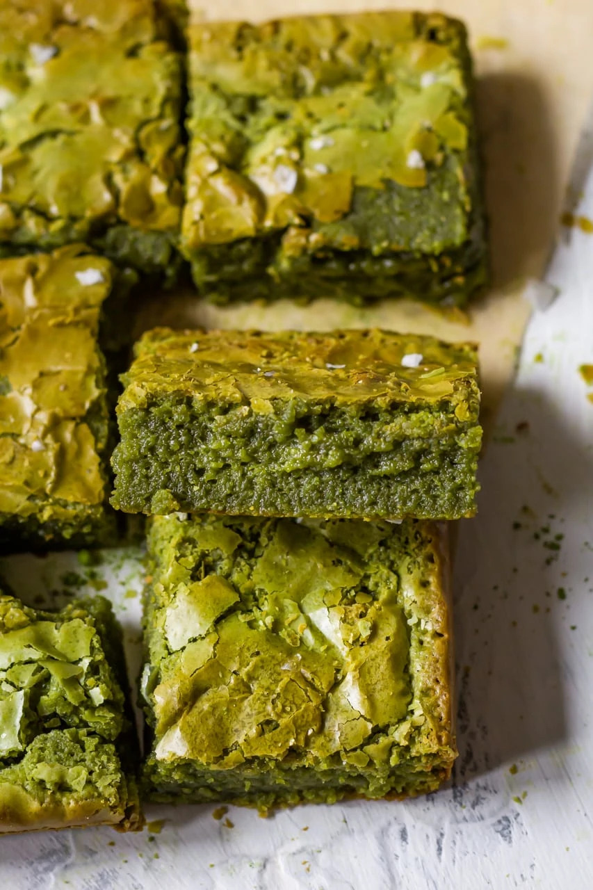
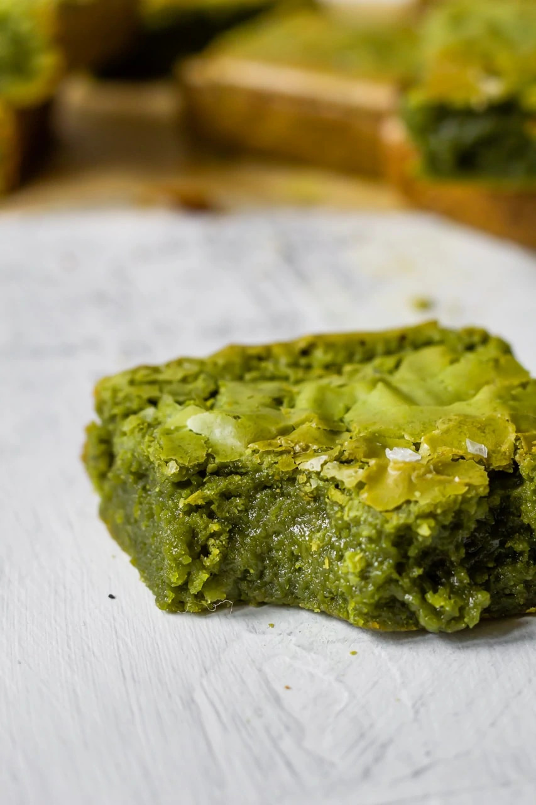
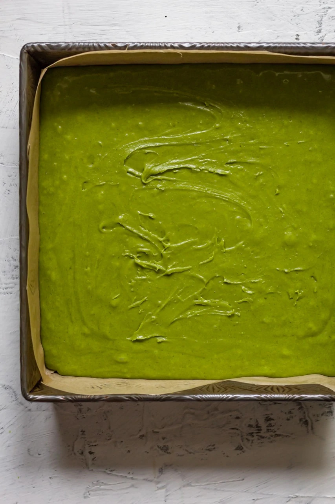

Fudgy Brown Butter Matcha Brownies
Source: Cooking Therapy by Becca
My love affair with matcha continues with these brown butter matcha brownies. I think I am on a crusade to matchify every classic dessert, and I am #notsorry about it! The reason I love adding matcha to desserts is not only for the vibrant green color or that smokey aroma of matcha. I love doing it because it helps balance out the sickening sweetness that exists in a lot of desserts. Case in point, brownies. Brownies are an amazing dessert, but most of the time, I can only have one piece because of how sweet most brownies are. Adding matcha to a classic brownie recipe balances out that sweetness, making it possible for you to have TWO instead of one.
Prep time: 30 minutes
Cook time: 30 minutes
Calories: 350
Makes 9 brownies
Ingredients
- ½ cup unsalted butter browned
- 4 oz white chocolate
- 2 tbsp matcha powder
- 1 cup granulated sugar
- ¼ cup light brown sugar
- 3 eggs room temperature
- 1 tsp vanilla extract
- ½ tsp salt
- 1 cup all purpose flour
- ¼ tsp flaky salt (optional)
Making my matcha brownies
- Preheat your oven to 350 degrees F. Grease a 8×8 baking pan with butter and line with parchment paper. Set aside. Next brown your butter. Heat unsalted butter over high heat until all the butter has melted. Then lower the heat to low and cook until brown bits start to appear. Remove from the heat. Next add white chocolate to a small bowl. Sift in the matcha powder. Pour the browned butter over the top and stir until a uniform green ganache appears. Set aside.
- Combine granulated sugar, light brown sugar, eggs, vanilla extract, and salt in a large bowl. Use a hand mixer to whisk the mixture until it is thick and cream (5-10 minutes). While mixing, stream in your matcha chocolate ganache. Whisk until a uniform green mixture appears. Lastly, sift your flour into the bowl. Using a spatula, gently fold the flour into the green mixture. Be careful not to deflate the batter too much. Mix until just combined. Spoon the batter into your prepared pan.
- Bake brownies for 20-30 minutes. After 20 minutes, take out the brownies and smack the pan onto a flat surface to get rid of some of the air bubbles. Sprinkle some flaky salt on top and put them back in the oven. Bake for another 10 minutes. Let brownies cool for 20 minutes before serving.

